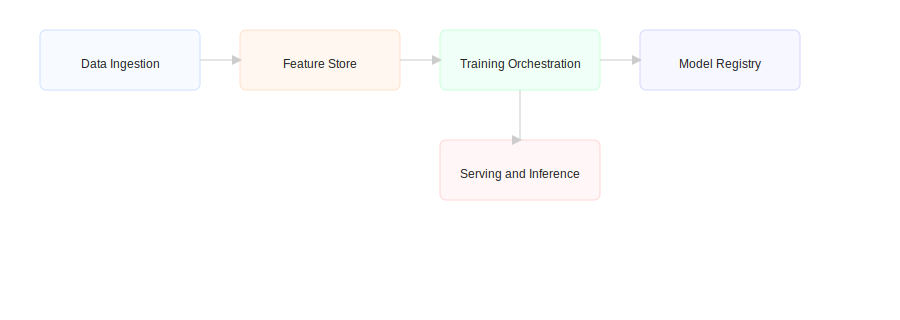

AI Architecture & Design
We design scalable AI systems with robust MLOps, data pipelines, and model governance.
Reference Architecture
SlewsIT AI architecture: data ingestion, feature store, training orchestration, model registry, and serving.
Key offerings
- Data pipeline & ETL design
- MLOps & model lifecycle automation (MLflow, Kubeflow)
- Feature stores & data governance
- Scalable model training & optimization